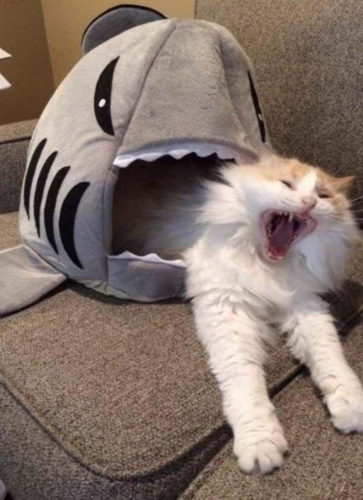
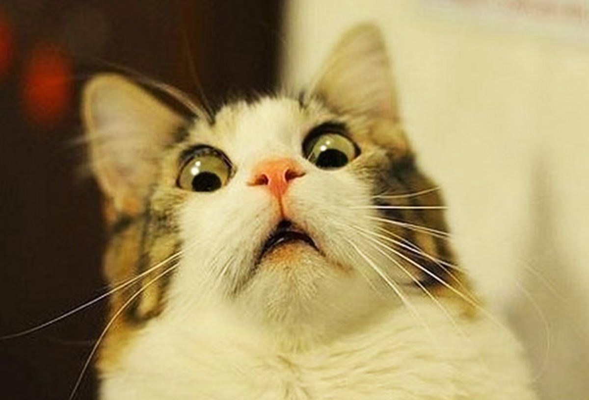
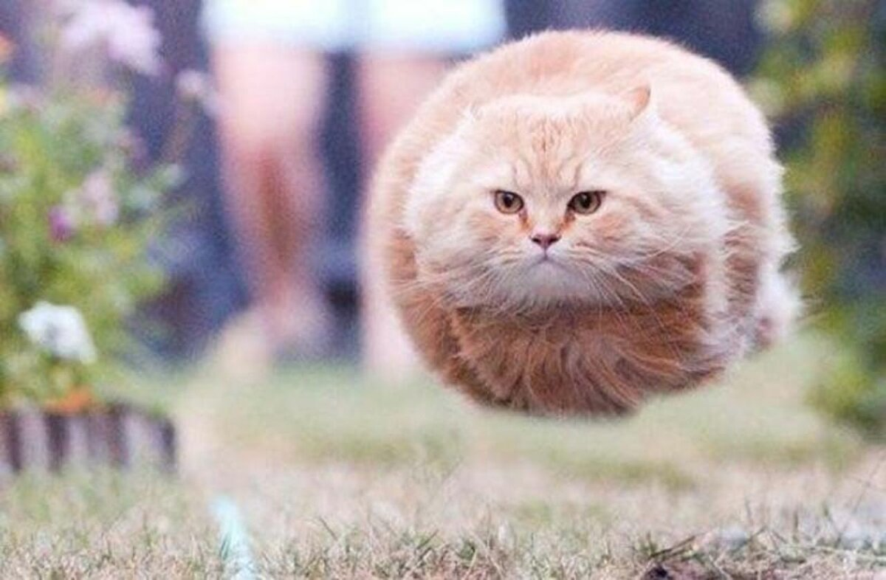
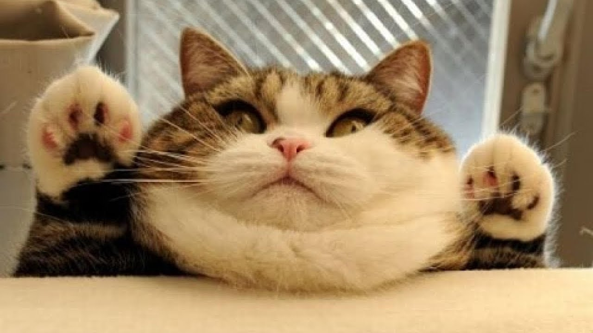
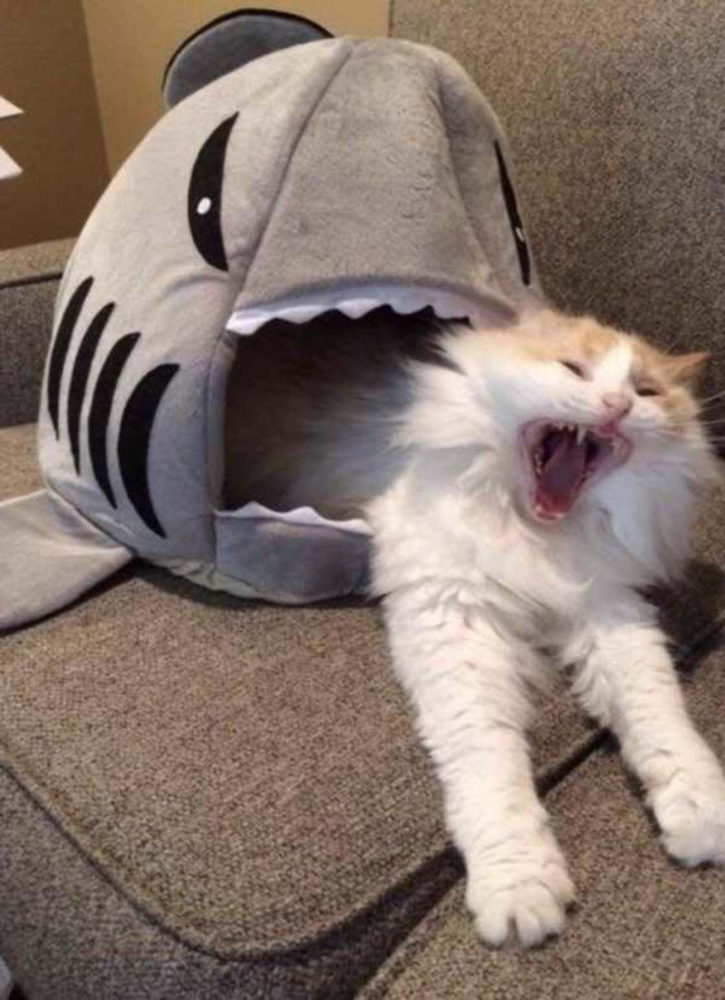
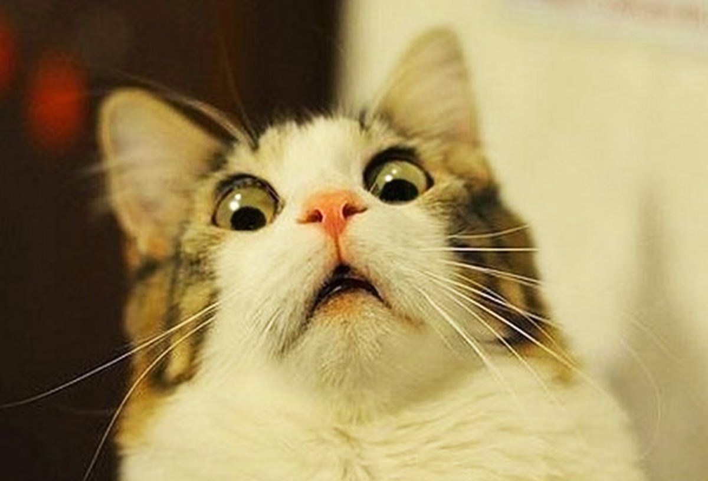
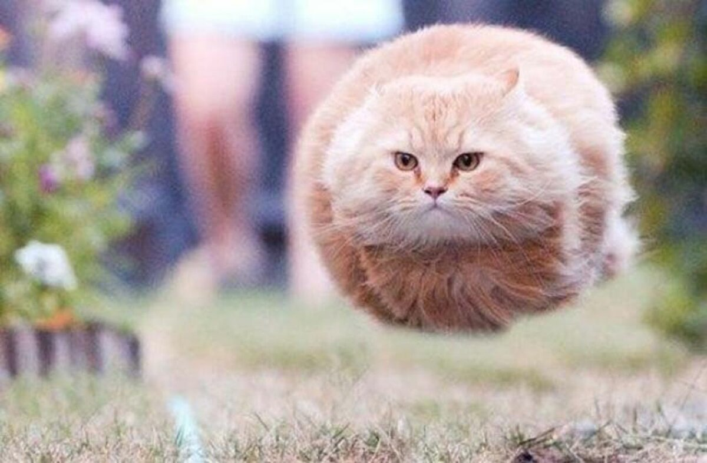
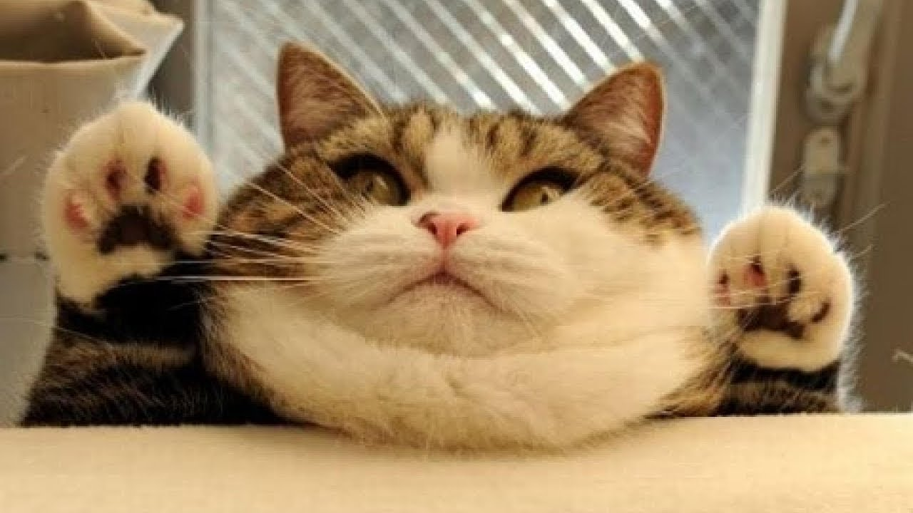

Информация

Кот — название некоторых видов хищных млекопитающих рода Кошки и некоторых других родов семейства кошачьих, в том числе и популярное домашнее животное домашний кот, а также Лесной кот.
Многие до сих пор считают котов безэмоциональными существами, которые не проявляют свою любовь. Кошатники, конечно, не согласятся: трудно поверить, что вы безразличны коту, когда он свернулся у вас на коленях и ласково мурлыкает. И в общем, исследования кошачьего поведения это подтверждают: кота и человека связывают эмоциональные узы.
Например, кошки испытывают тревогу, когда их разлучают с хозяином, отличают голос хозяина от голосов других людей и в опасных ситуациях ищут у своего человека поддержки и спасения.
 






